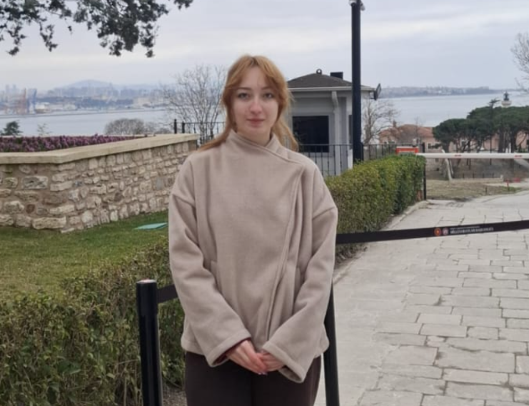

Merhaba, ben
Reyyan Karadeniz
Bilgisayar Mühendisliği Öğrencisi
Modern, kullanıcı dostu ve estetik web uygulamaları geliştirmeyi seven bir yazılım geliştiricisiyim.

Hakkımda
Kısaca Ben
Merhaba! Ben Reyyan Karadeniz. Bilgisayar Mühendisliği öğrencisiyim ve yazılım geliştirme alanında kendimi sürekli geliştirmeye odaklanıyorum. Temiz kod yazmaya ve modern tasarımlar oluşturmaya önem veriyorum. Upuzun random bir satır. bunu uzun paragrafları doldurmak için kullanıyorum. bu yazı tamamen randomdur. hiçbir şekilde okuyup ana bu neymis demeyin. Şu an bunu okuyarak zaten baya vakit kaybettiniz ama sizin tercihiniz yani uyarıları dinlemeniz lazım. İyi insanla kötüyü ayırmanız lazım. Kimden tavsiye aldığınıza dikkat edin ben okumayın derken sizin için demiştim ama siz okumayı tercih ettiniz. Nyese sağlık olsun. Lütfen yazım yanlışı yaptıysam bunu umursamayın... İyi günler dilerim.
Neler Yapabilirim
Web geliştirme, .NET teknolojileri ve kullanıcı deneyimi üzerine çalışıyorum. Modern, kullanıcı dostu arayüzler ve sürdürülebilir kod tabanları oluşturabilirim. (Buraya yapabileceğin işleri detaylandır.) Upuzun random bir satır. bunu uzun paragrafları doldurmak için kullanıyorum. bu yazı tamamen randomdur. hiçbir şekilde okuyup ana bu neymis demeyin. Şu an bunu okuyarak zaten baya vakit kaybettiniz ama sizin tercihiniz yani uyarıları dinlemeniz lazım. İyi insanla kötüyü ayırmanız lazım. Kimden tavsiye aldığınıza dikkat edin ben okumayın derken sizin için demiştim ama siz okumayı tercih ettiniz. Nyese sağlık olsun. Lütfen yazım yanlışı yaptıysam bunu umursamayın... İyi günler dilerim.
İş birliği için iletişime geç →Eğitim Geçmişi
(Üniversiten, bölümün, mezuniyet yılın ya da ilgili kurslar/sertifikalar buraya gelecek.) Upuzun random bir satır. bunu uzun paragrafları doldurmak için kullanıyorum. bu yazı tamamen randomdur. hiçbir şekilde okuyup ana bu neymis demeyin. Şu an bunu okuyarak zaten baya vakit kaybettiniz ama sizin tercihiniz yani uyarıları dinlemeniz lazım. İyi insanla kötüyü ayırmanız lazım. Kimden tavsiye aldığınıza dikkat edin ben okumayın derken sizin için demiştim ama siz okumayı tercih ettiniz. Nyese sağlık olsun. Lütfen yazım yanlışı yaptıysam bunu umursamayın... İyi günler dilerim.
İlgi Alanlarım
(Yazılım dışı ve içi ilgi alanların buraya. Örn. UI tasarımı, açık kaynak, oyun geliştirme, okuma, vb.) Upuzun random bir satır. bunu uzun paragrafları doldurmak için kullanıyorum. bu yazı tamamen randomdur. hiçbir şekilde okuyup ana bu neymis demeyin. Şu an bunu okuyarak zaten baya vakit kaybettiniz ama sizin tercihiniz yani uyarıları dinlemeniz lazım. İyi insanla kötüyü ayırmanız lazım. Kimden tavsiye aldığınıza dikkat edin ben okumayın derken sizin için demiştim ama siz okumayı tercih ettiniz. Nyese sağlık olsun. Lütfen yazım yanlışı yaptıysam bunu umursamayın... İyi günler dilerim.